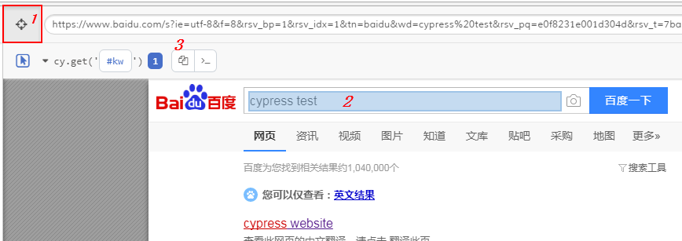

Cypress是为现代网络打造的下一代前端测试工具，解决了开发人员和QA工程师在测试现代应用程序时面临的关键难点问题。
Cypress包含免费的、开源的、可本地安装的Test Runner 和 能够记录你测试的控制面板服务。
1) 通过npm来安装Cypress：
① 那么首先安装node.js（npm是一个node包管理和分发工具），下载：https://nodejs.org/en/
② 打开CMD命令行，利用 mkdir 新建目录，利用 cd 命令切换到指定目录（也可以手动先新建好）
③ 使用 npm install cypress --save-dev 安装Cypress（如果有WARN可忽略，不影响）
④ 使用 node_modules\.bin\cypress open 启动Cypress
2) 直接下载Cypress压缩包
① 官网下载地址：https://download.cypress.io
② 解压到指定目录，然后进入目录，执行Cypress.exe
③ 选择你的项目路径
1） 默认已经为我们准备了一些丰富的例子 ，可以直接点击运行。
2）我们也可以自己新建一个测试文件：
① 首先切换至目录 ~\Cypress\cypress\integration（任意编辑器都可以，我使用的时PyCharm）
② 然后新建一个测试文件 sample_spec.js，代码如下：
describe('My First Test', function () {
it('Does not do much!', function () {
cy.visit("https://www.baidu.com")
cy.get("#kw").type("cypress test")
cy.wait(60)
cy.get("#su").click()
cy.contains('cypress website').click()
})
})③ 最后打开Cypress运行此文件即可，你会发现运行速度很快，这就是Cypress的优势所在。
④ 更多API详解参考：https://docs.cypress.io/zh-cn/guides/guides/module-api.html#cypress-run
1） 运行情况： 从左向右分别显示成功数、失败数、未运行、耗时，以及自动滚屏和重新运行按钮
2） 控件定位： 1.点击选择器 ->2.点击定位元素 ->3.复制生成代码

3） 窗口设置：
① 默认情况下，除非由cy.viewport命令指定，否则视口将为1000*660px
② 我们可以通过在cypress.json中指定这些值来覆盖默认视口维度
{
“viewportWidth”：1200，
“viewportHeight”：800
}
----- 转载请注明原作，谢谢：https://www.cnblogs.com/leozhanggg/p/10973820.html